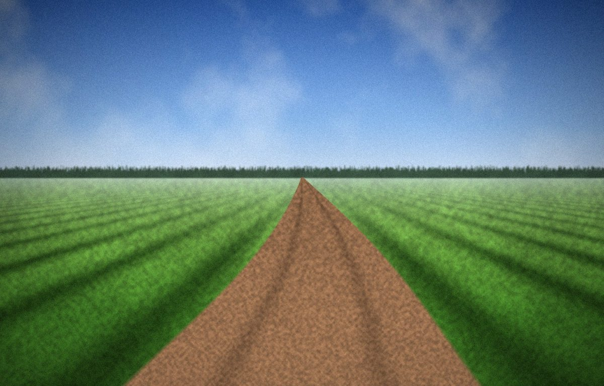

Agro
Safra de soja no Oeste Paulista deve ser a maior em cinco anos, projetam cooperativas
Chuvas regulares e novas variedades elevam a expectativa de produtividade em Presidente Prudente, Rancharia e Martinópolis.

Prefeitura de Presidente Prudente anuncia recapeamento em 14 bairros a partir de dezembro

Prudentino vence clássico regional e assume a liderança do campeonato
Mais lidas
- Defesa Civil emite alerta de chuva forte para 12 cidades da região
- Rio Paraná tem temporada de pesca aberta e movimenta pousadas do Pontal
- Câmara de Presidente Prudente aprova orçamento de 2027 em primeira votação
- Preço da cesta básica cai pelo segundo mês em Presidente Prudente
- Rodovia Raposo Tavares terá trecho com faixa adicional entre Prudente e Regente Feijó
Publicidade · 970 × 90
Últimas notícias
- EconomiaComércio do Oeste Paulista prevê contratar mais temporários no fim de ano
- PolíticaCâmara de Presidente Prudente aprova orçamento de 2027 em primeira votação
- AgroPreço do boi gordo sobe pela terceira semana seguida em São Paulo
- RegiãoRodovia Raposo Tavares terá trecho com faixa adicional entre Prudente e Regente Feijó
- TurismoFazendas abrem as porteiras para o turismo rural em Presidente Bernardes
- EconomiaIndústria de alimentos anuncia ampliação de fábrica em Dracena
- AgroCana-de-açúcar: usinas da região encerram moagem com ATR acima da média
- PolíticaPrefeitos do Oeste Paulista levam pauta de estradas vicinais ao governo do Estado
- EsportesCorrida de rua noturna reúne 3 mil atletas no Parque do Povo
Região
Ver tudo →Prefeitura de Presidente Prudente anuncia recapeamento em 14 bairros a partir de dezembro

Rodovia Raposo Tavares terá trecho com faixa adicional entre Prudente e Regente Feijó
RegiãoDefesa Civil emite alerta de chuva forte para 12 cidades da região
RegiãoAdamantina inaugura nova unidade de saúde no Jardim Brasil
Agro
Ver tudo →Esportes
Ver tudo →Prudentino vence clássico regional e assume a liderança do campeonato
Gol nos acréscimos garantiu a vitória diante de 6 mil torcedores no Prudentão.
EsportesCorrida de rua noturna reúne 3 mil atletas no Parque do Povo
Prova teve percursos de 5 km e 10 km e categoria para crianças.
Seleção de Presidente Venceslau está na final dos Jogos Regionais
Equipe de vôlei feminino disputa o título neste sábado.
Turismo
Ver tudo →
Rio Paraná tem temporada de pesca aberta e movimenta pousadas do Pontal
Rosana e Presidente Epitácio esperam lotação máxima nos feriados de fim de ano.
TurismoFazendas abrem as porteiras para o turismo rural em Presidente Bernardes
Roteiro inclui café colonial, ordenha e passeio a cavalo aos fins de semana.
TurismoFestival gastronômico reúne 30 restaurantes em Presidente Prudente
Pratos custam até R$ 45 e a programação inclui música ao vivo.
Rádio Oeste em Pauta
Ver tudo →No ar agora
Manhã Oeste
Notícias, prestação de serviço e música para começar o dia, com Ana Ribeiro.
- NO ARManhã Oestecom Ana Ribeiro
- Conexão Regionalcom Marcos Lima
- Jornal do Meio-DiaRedação Oeste em Pauta
- Tarde Sertanejacom Lúcia Campos
Opinião
O Oeste no seu e-mail
Notícias, cotações e a agenda da região, toda manhã às 7h.